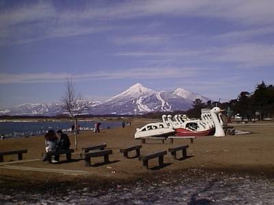
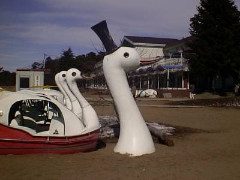
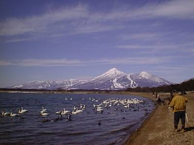
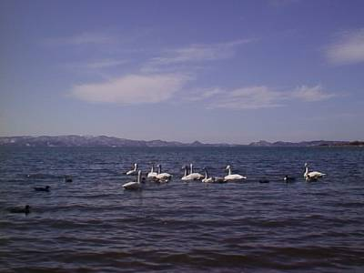
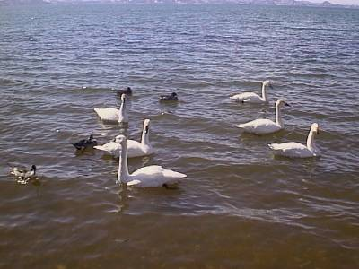
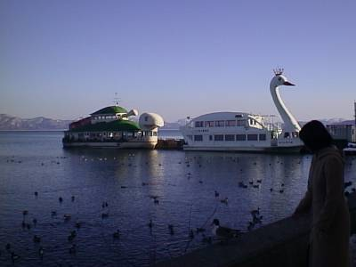

my treasure box
－1999/3/1－
昨日の内に福島県に入ったので、とりあえずの北のターニングポイントと考えていた猪苗代湖へと向かいました。そのあと喜多方ラーメンを食し、満足満足。
| ○福島県郡山市 発 |
| ＝＞ 国道４９号線 －＞ 国道１２１号線 －＞ 国道４９号線 －＞ 国道６号線 ＝＞ |
| ○茨城県土浦市 着 |
～猪苗代湖～

ついに来ました。北のターニングポイントと考えていた猪苗代湖。とりあえず、猪苗代湖と磐梯山を、人工白鳥とともに。

文字通り白鳥が埋まっていました。これは首だけなのか、それとも砂の中に体が埋まっているのか。猪苗代湖に住むと言われる恐竜イナッシーの謎とともに夜眠れなくなってしまいそうです。

これが観光写真。スキー場があってなぜか痛々しい感じをうけます。この後、会津若松、喜多方へと向かいますが、その方角から見た磐梯山の方がより勇壮である印象を受けました。とはいえ、猪苗代湖とセットで見る磐梯山も自然の美を感じさせます。

猪苗代湖には白鳥や鴨がいました。天気が良かったとはいえ結構肌寒く、その中を泳ぐ姿は凛とした風格を漂わせていました。水がきれいで、まさに白鳥の湖とよぶにふさわしい湖です。

鳥たちのアップ。だいぶ人になれていて、近づくぐらいならびくともしません。実際に白鳥を見たのは初めてなので、結構感動です。

猪苗代湖には遊覧船が３つあり、その中のはくちょう号とかめ号です。本栖湖の竜と比べて、人も集まっており、生き生きして見えます。ここには何十羽という鴨がいました。観光客のえさめあてに集まったようです。この写真の前に、鴨の肉のうまさについて熱心に語るおばちゃんに遭遇。さすがおばちゃん。気持ちはわかるが。
このあと、喜多方に行き、ラーメンを食べてきました。うまかったです。
そしてその後、再び郡山に戻り、一路南へ・・・